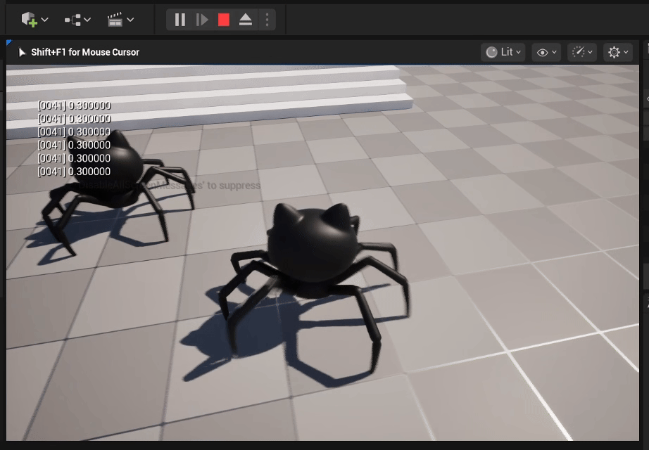

projects
CatSpider
CatSpider

模型生成与处理
混元3D 生成模型:

处理后：

绑定
自定义骨架

Control Rig 逻辑

Foot Lock 逻辑
1. 计算 Cycle
为了达到速度越大摆腿越快的效果，需要根据速度调节 cycle
- 算适应于相关速度的 Cycle 时间：CycleLengthInSeconds

- 更改 Cycle 的增长速度

2. 变化 FootLockedArray (booleans)
saturate(FootOffset[i] + CyclePercent)与SwingPercent相比- 在 swing time 内移动，在剩下时间 lock
- 更新逻辑如下

3. 解除锁定时更新位置

World Position 计算逻辑
1. 脚步长度预测
核心：选择合适落点
PredictedFootTransforms = WorldFinalFootTransforms + Velocity * Something

- S=SwingPercent：摆动阶段占整个周期的比例
- p=PerFootCyclePercent：当前这只脚在周期中的进度
- T=CycleLengthInSeconds：一个完整步态周期的时长
- v=Velocity：身体的世界速度
它其实可以拆成两段时间：
0 S S + ½(1-S) 1
|------ Swing -----|------ 前半支撑 ------|------ 后半支撑 ------|
当前 p 落地 支撑中点
刚落地：脚在身体前方
↓
支撑中点：脚大致位于身体正下方,**身体追上脚**
↓
离地前：脚位于身体后方,身体超过脚
2. Foot Lift
z 方向的 transform：
- 曲线 x 值：Swing 的进程
- 曲线 y 值：定义的高度

3. Land Track 碰撞检测

在落脚点的垂直直线上进行碰撞检测，设置碰撞点为落脚点

更好的方式：

更新逻辑：
核心：Set Full Body IK